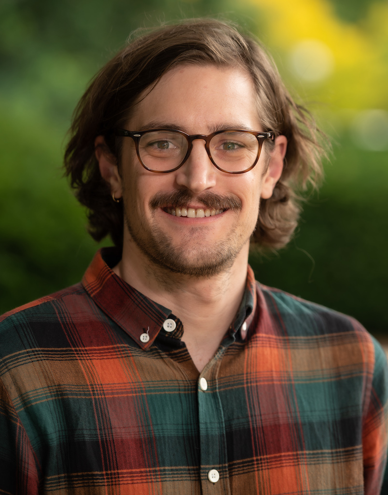

Maximilian H.K. Hesselbarth Postdoctoral Fellow

Coastal Ecology and Conservation Lab
Biography
Hi, my name is Max (he/him/his) and I am a computational ecologist at the Coastal Ecology and Conservation Lab based at the University of Michigan. I am interested in ecological modelling and especially considering the spatial explicit characteristics of most ecological processes.
My research is mainly focused on how we can use spatial patterns to infer the underlying ecological processes. In this context, I use spatial point pattern analysis, individual-based modelling and landscape ecology. Lastly, I am always interested in R programming.
Interests
Point pattern analysis
Individual-based modelling
Landscape ecology
R programming
Education
Ph.D. in Ecology, 2020
University of Goettingen (Goettingen, Germany)
M.Sc. in Ecosystem Modelling, 2016
University of Goettingen (Goettingen, Germany)
B.Sc. in Forestry, 2014
University of Applied Sciences and Arts, (Goettingen, Germany)